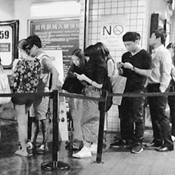
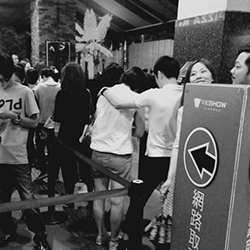

Yahoo! wants to build this project for one simple reason : We have tons of daily active users in Yahoo! PC Movie Page. And movie is part of the media vertical line. We also already have the News app in Google play and the App store. In order to strengthen our news app, we decided to add movie into our current news app.
From design’s perspective, we do not just receive this requirement from the business or product managers. Instead, we walk into the user’s daily life such as when they visit the biggest movie theatre in Xinyi district. We’d like to know what they would normally do when they want to buy tickets in Taiwan. Then, we can find out that people usually stand in a queue for hours to buy a ticket. Even though they use apps to buy movie tickets online, they still need to pick-up their reserved tickets before 30 mins movie started.
 Based on previous findings, I quickly designed two movie concept and some prototypes. But after reviewing with stakeholders, we got lots of feedback. For example, they asked “Can we fulfill the users' needs?”, “Can we inspire users to explore more movies?”, “What’s the smart top logic on the top of the movie home screen?”, “What’s our product core value?”, “The timetable seems very weird, can we explore more experiences?”.

quick way to browse remaining seat - made by framer.js
Actually, we know two of these concepts it's just a way to brief how will it works if we have a movie app. It's just a holistic view about movie concept. But the most difficult things is we got lots of constraints from engineering or business side such as our API is still not ready yet. And we haven't closed some deal with the most popular movie's partnership in Taiwan at that time. At the same time, we need to deliver design to scrum team and follow up project schedule which means we don't have enough time to think about a holistic experience for this project. But, we still insisted on giving us at least two weeks to explore the possibility for movie app. To validate our design, we decided to do further fundamental research for this project.

another concept which I want to demo browsing experience for movie main page - made by framer.js
After we received these feedbacks, we started mapping out the next plan with researcher. We want to learn from user and find out user pain points. We want to know their buying tickets behavior. How do they find a movie when they want to see a movie. How do they interact with our prototype. So we interviewed with 6 users. With six users in this interview, we can identify possible failures, insights and daily life behaviour from users. Here’s the process after we face bottleneck :
1. Build prototype for user interview 2. User interview 3. Persona & User journey map 4. Study hightlight & Finding statement 5. How might we 6. Random object workshop
{kind=link}
{kind=link}